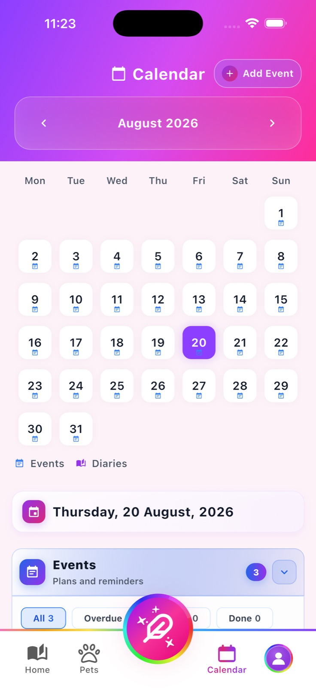
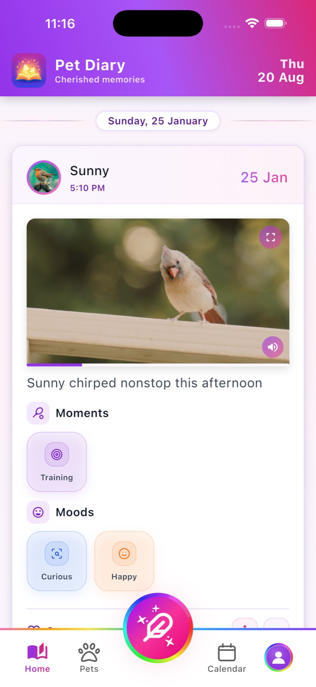
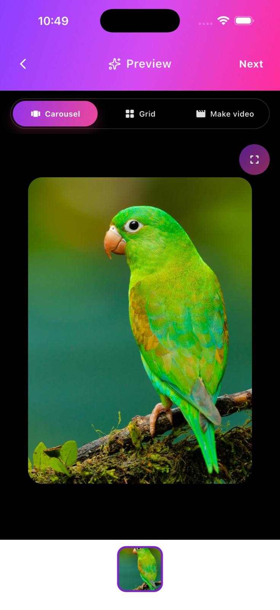

More than a photo journal
Add photos, videos and captions. Record activities, moods and optional location check-ins, then revisit each pet's timeline whenever you like.
Memories, care & reminders
Capture photos and videos, organize every pet's story, and plan care routines with a calendar and gentle local reminders—all in one private, on-device journal.



Made for life with pets
Pet Diary brings memories, pet profiles and everyday routines into a calm space that works without an account or Pet Diary server.
Add photos, videos and captions. Record activities, moods and optional location check-ins, then revisit each pet's timeline whenever you like.
Keep names, birthdays, breeds, weights, personalities and photos together for your pets and their animal friends.
Schedule feeding, walks, grooming, vet visits, vaccinations, medication and other plans. Add repeat schedules and optional local reminders.
Create and revisit
Private by design
Pet Diary has no account, developer-operated backend, advertising, analytics or cross-app tracking. Optional platform services are used only when you request their related feature.
Need a hand?
Find answers about permissions, reminders, media, sharing and local storage, or contact us by email.